This page preserves historical graph outputs from the original project, including the Goob router-impairment rerun that superseded the earlier Goob run.
Condition labels are shortened on router-impairment graphs: base-start/base-end, 1024k, loss 5%, 256k+1%, and similar.
The underlying reports and graph-generation tooling are intentionally omitted from this repository.
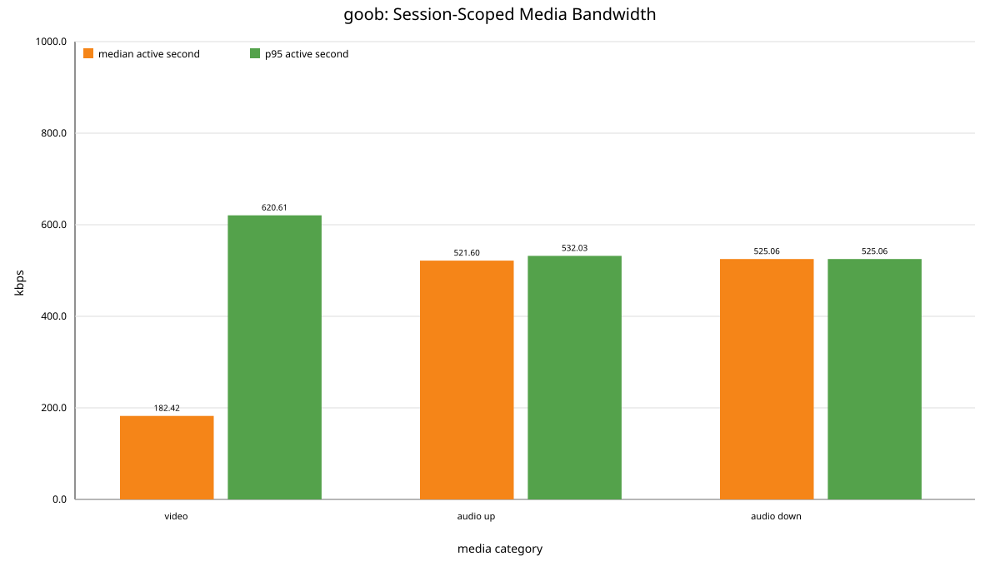
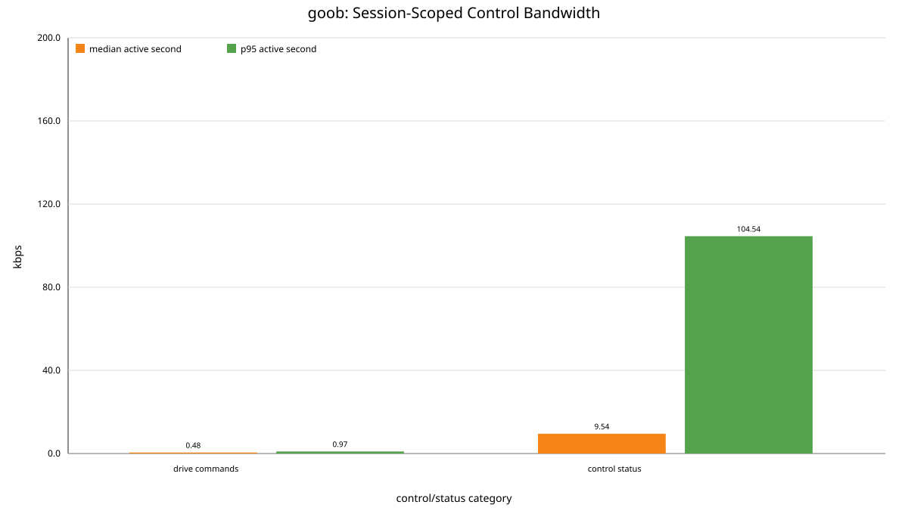
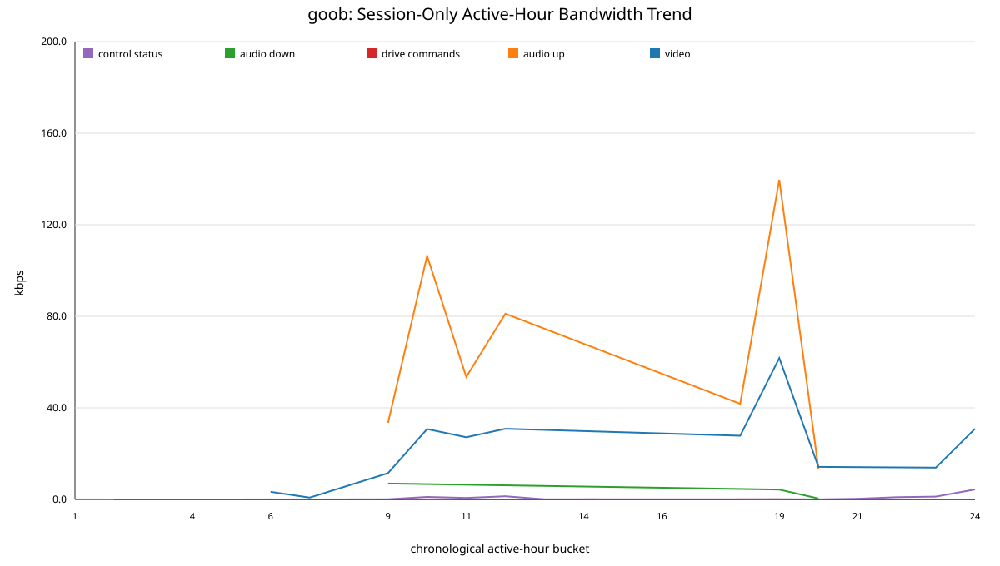
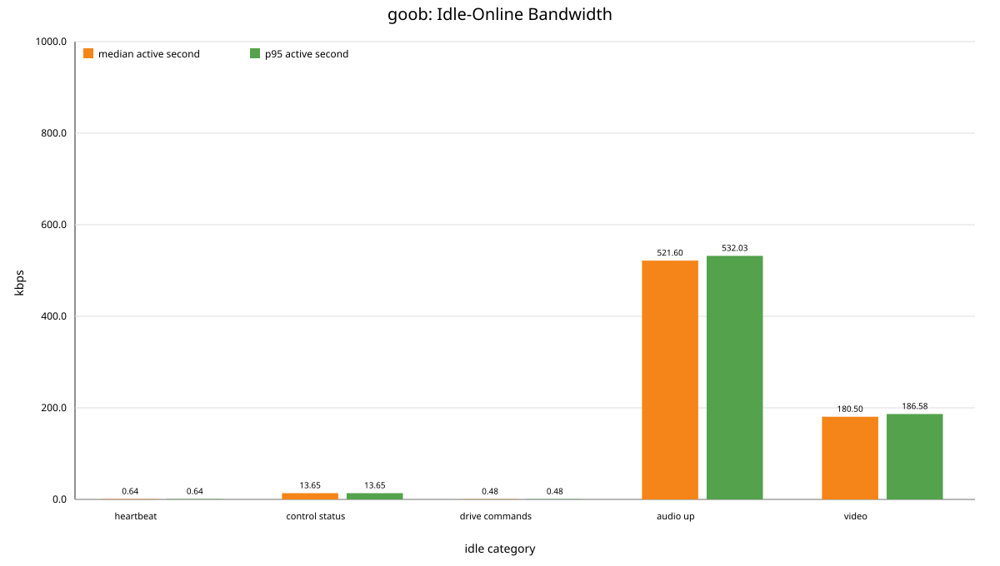
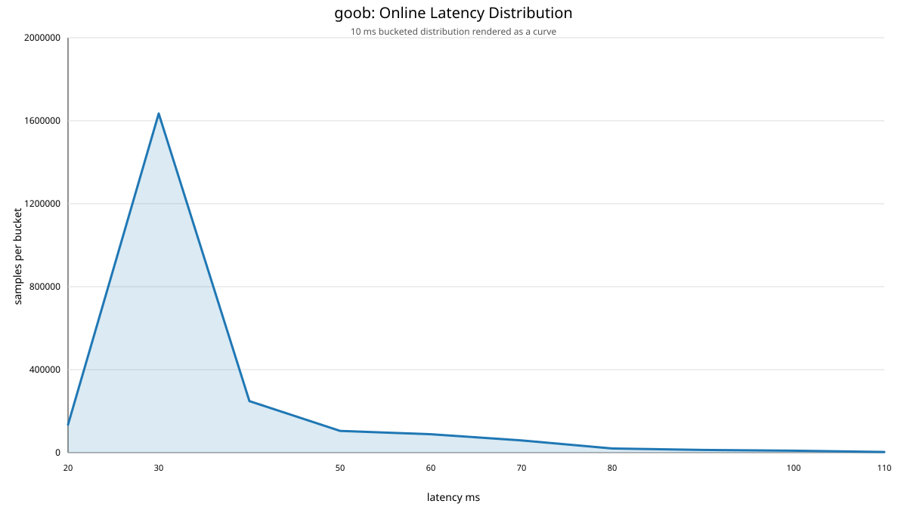
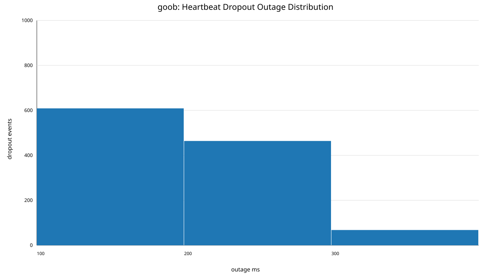
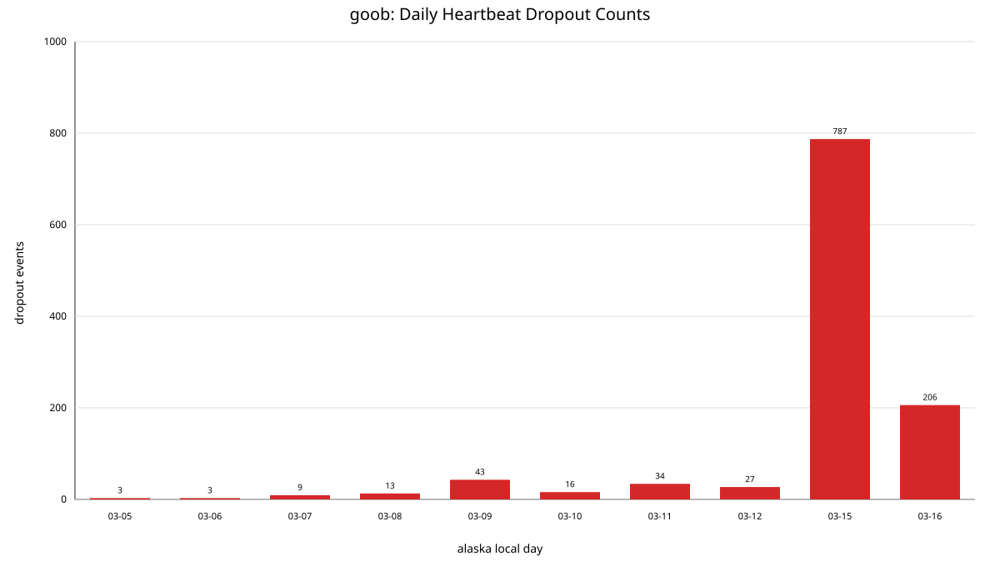
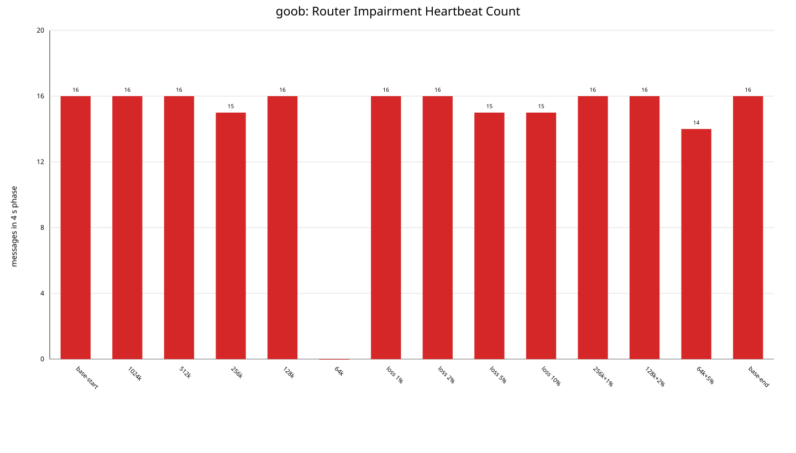
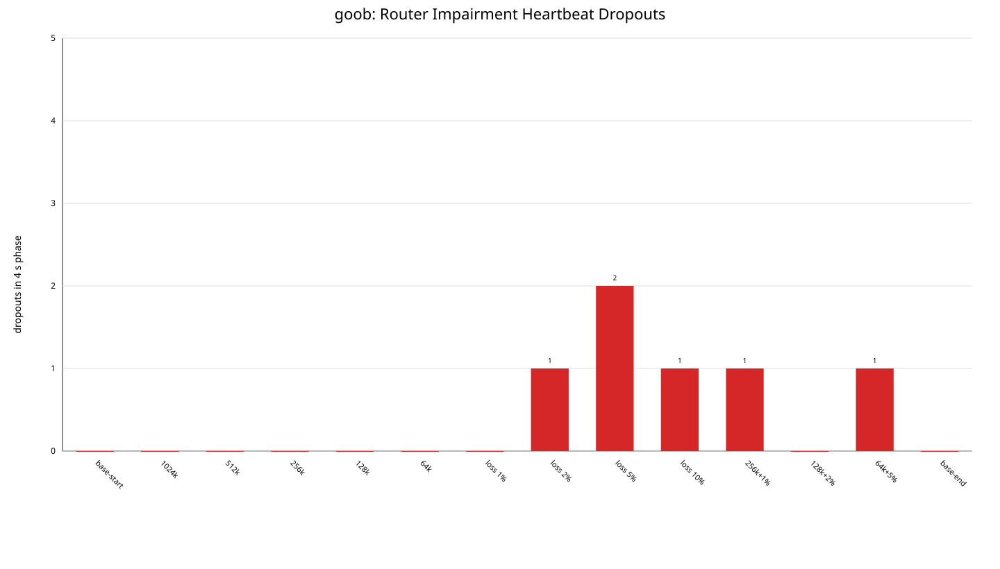
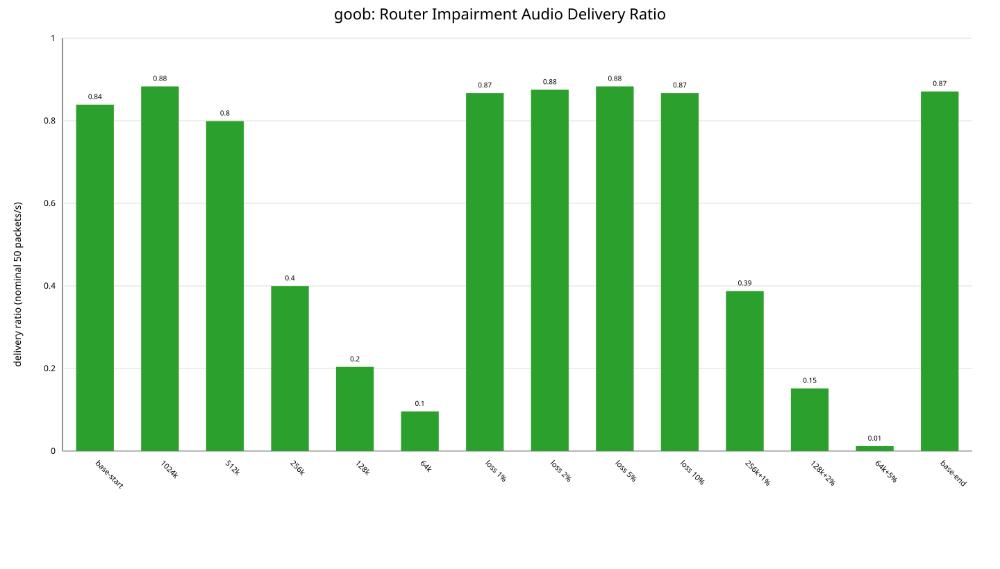
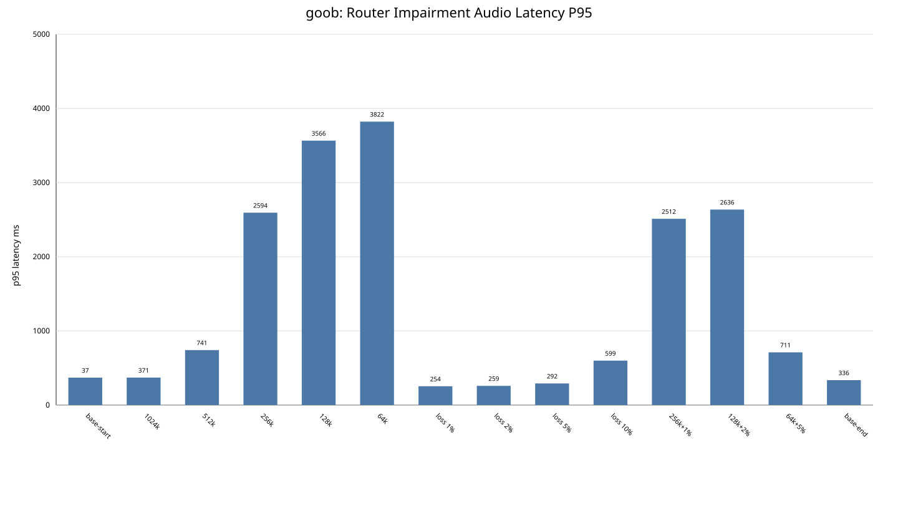
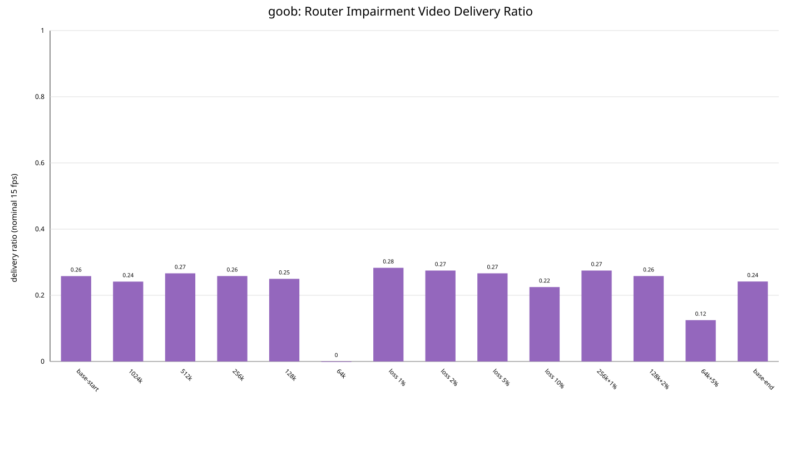
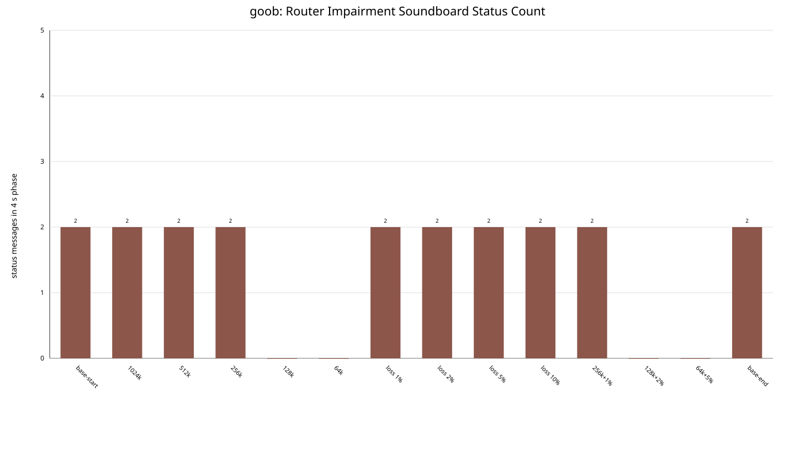